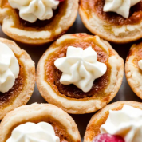

Welcome to Audrey's Bakery
Freshly baked goodness made with love, butter, and the finest grocery store ingredients. We've been serving our community since 2013.
Our Specialties
From lovely pies to fan favorite cakes, croissants to cookies, every item is crafted fresh daily. Whether you're looking for a simple pastry or a large party order, we've got you covered.
Hours & Location
Open Daily
Monday - Friday: 7am - 6pm
Saturday: 8am - 5pm
Sunday: 9am - 3pm
📍 Seattle, WA
📞 audrey@audreysbakery.com

Order Today!
Order bakery favorites for pickup or delivery. We bake fresh every day so your order arrives deliciously ready to enjoy.
Why Choose Us?
Time-honored recipes, a passion for baking, and a commitment to absolute awesomeness. We believe in quality over quantity (although we do our best to have both!), and it shows in every bite.